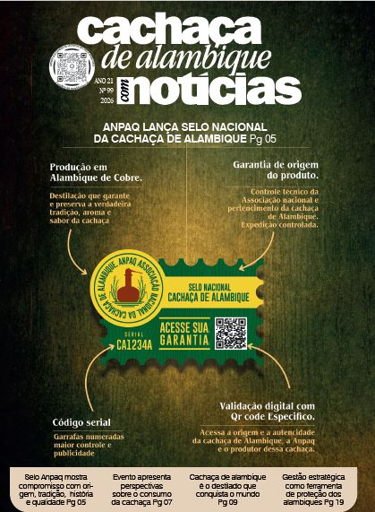

Nem toda cachaça é produzida em alambique de cobre e por bateladas. Nem toda preserva a tradição brasileira. Agora você pode saber a diferença.
Nem toda cachaça é produzida em alambique de cobre e por bateladas. Nem toda cachaça preserva a tradição brasileira. Conheça o que faz a verdadeira diferença.
Pertencimento + Confiança + Autenticidade + Transparência
